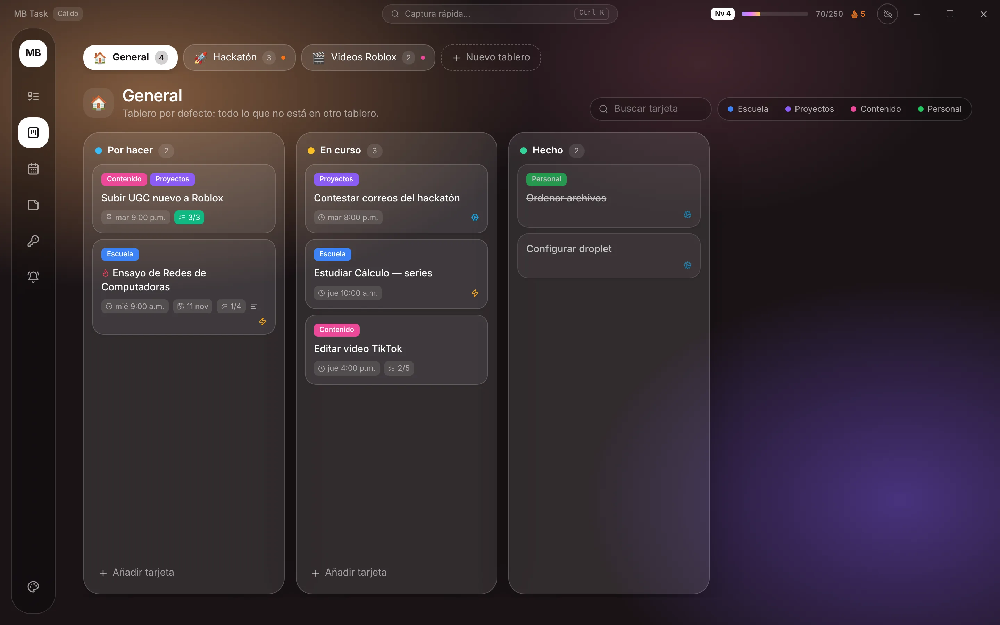
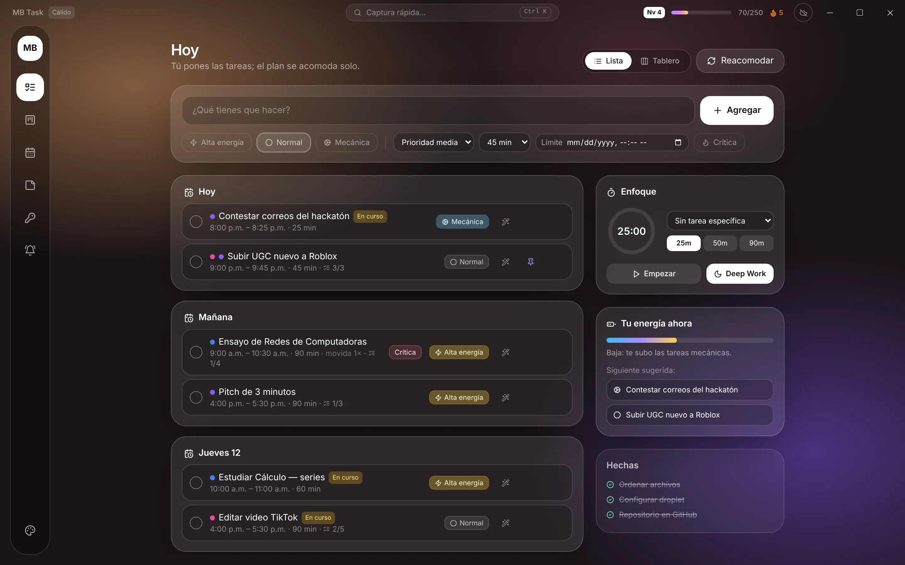
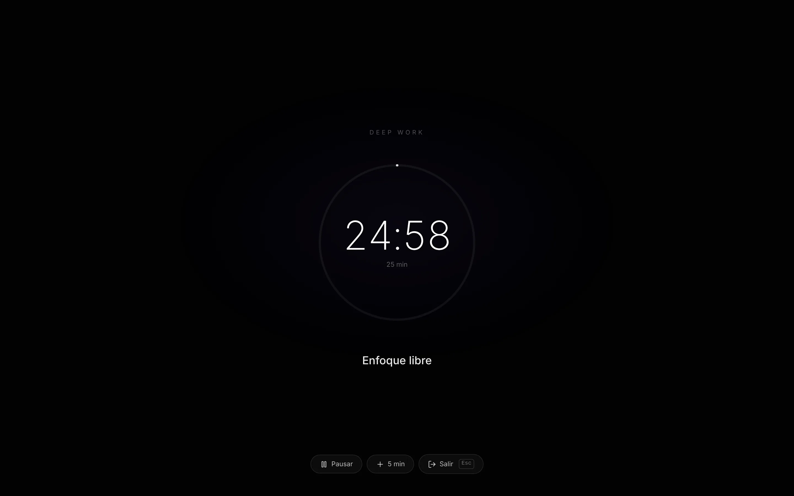
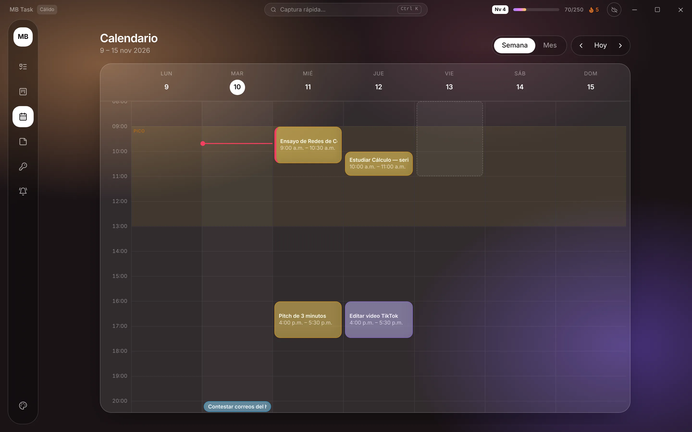
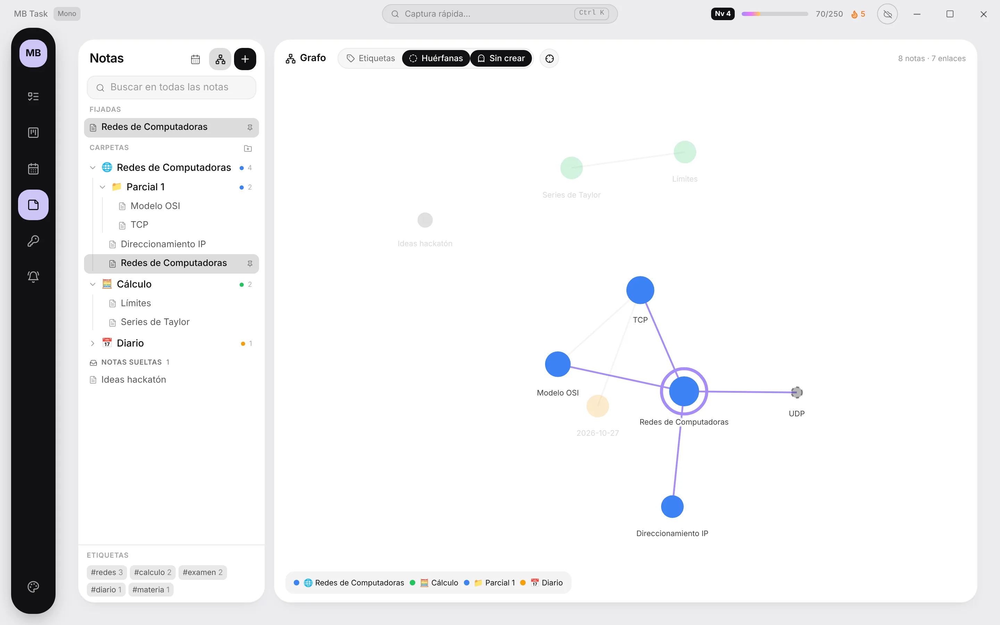
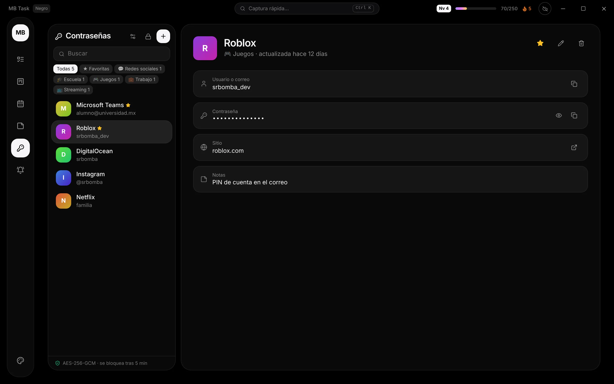

Tableros tipo Kanban
Un tablero general y los que tú crees: uno para la escuela, otro para el hackatón, otro para tus videos. Arrastra tarjetas entre columnas.

MB Task es tu gestor de tareas en la PC, el celular y la web, siempre sincronizado. Si algo no te dio tiempo, lo mueve a tu siguiente hueco libre sin regañarte. Además trae tablero, calendario, notas conectadas y modo Deep Work.

Funciones
Lo armamos tomando ideas de las apps de productividad más usadas y quitándoles la parte que estresa.
Un tablero general y los que tú crees: uno para la escuela, otro para el hackatón, otro para tus videos. Arrastra tarjetas entre columnas.

Pantalla completa, un temporizador y nada más. Cada sesión terminada te da XP.

Ve en qué hueco cayó cada tarea y bloquea tus horas de clase para que no te ponga nada encima.

Carpetas por materia, [[enlaces]]#etiquetas y un grafo para ver cómo se conectan tus apuntes, como en Obsidian.

01 · REACOMODO
Si una tarea no se hizo, el motor la pasa a tu siguiente espacio libre, respetando prioridad y fecha límite.
02 · ALERTAS
Primero un aviso suave, luego uno más visible y, si es crítica, ocupa toda la pantalla hasta que decidas.
03 · ENERGÍA
Distingue tareas de alta energía de las mecánicas y te sugiere la que mejor va con tu momento del día.
NUEVO · SE REPITEN
“Gym todos los lunes y jueves 7am” y listo: al terminarla aparece la siguiente, con su checklist y etiquetas.
NUEVO · HÁBITOS
Tomar agua, leer, entrenar: un toque al día, tu racha 🔥 y la semana en puntitos. Cada uno suma XP.
NUEVO · ENFOQUE
Ordena por urgente e importante, busca lo que sea con Ctrl K y ve a qué hora y qué día rindes más.
Temas
Cambia de tema en un clic y la ventana entera se adapta, hasta los botones de Windows.
Seguridad
MB Task incluye una bóveda para guardar tus cuentas. Está diseñada para que, aunque alguien copie el archivo de tu PC o de tu celular, no pueda leer nada.

Descarga
Entra con la misma cuenta en tu PC y en tu celular: tareas, tableros, notas y contraseñas se sincronizan solos. También puedes usarla sin cuenta.
Android (APK):
iPhone (app web):
¿Prefieres no instalar el APK? En Android también puedes abrir la app web en Chrome y tocar ⋮ → Instalar app.
Preguntas
Nada. MB Task es gratis.
No. Tareas, notas, calendario y la bóveda funcionan sin conexión. Sólo necesitas internet para iniciar sesión con tu cuenta.
No es obligatorio: puedes elegir "Seguir sin cuenta" y todo se guarda en ese dispositivo. Con cuenta, tus tareas, notas y contraseñas se sincronizan entre tu PC y tu celular.
Sí. En Android ya puedes instalar el APK desde la sección de descarga. Las apps para App Store y Google Play vienen pronto; en iPhone abre mrbombita.github.io/mb-task/app en tu celular. En iPhone, en Safari toca Compartir → Agregar a inicio y queda como una app. Entra con tu misma cuenta y verás las mismas tareas, tableros y notas que en tu PC.
No se puede recuperar. Es a propósito: sin tu contraseña y tus dos respuestas, nadie puede abrirla. Anótalas en un lugar seguro.